L7 深入浅出负载均衡
1、负载均衡简介
1-1 大型网站面临的挑战
大型网站都要面对庞大的用户量，高并发，海量数据等挑战。为了提升系统整体的性能，可以采用垂直扩展和水平扩展两种方式。
垂直扩展：在网站发展早期，可以从单机的角度通过增加硬件处理能力，比如 CPU 处理能力，内存容量，磁盘等方面，实现服务器处理能力的提升。但是，单机是有性能瓶颈的，一旦触及瓶颈，再想提升，付出的成本和代价会极高。这显然不能满足大型分布式系统（网站）所有应对的大流量，高并发，海量数据等挑战。
水平扩展：通过集群来分担大型网站的流量。集群中的应用服务器（节点）通常被设计成无状态，用户可以请求任何一个节点，这些节点共同分担访问压力。水平扩展有两个要点：
- 应用集群：将同一应用部署到多台机器上，组成处理集群，接收负载均衡设备分发的请求，进行处理，并返回相应数据。
- 负载均衡：将用户访问请求，通过某种算法，分发到集群中的节点。
1-2. 什么是负载均衡
负载均衡（Load Balance，简称 LB）是高并发、高可用系统必不可少的关键组件，目标是 尽力将网络流量平均分发到多个服务器上，以提高系统整体的响应速度和可用性。
负载均衡的主要作用如下：
-
高并发：负载均衡通过算法调整负载，尽力均匀的分配应用集群中各节点的工作量，以此提高应用集群的并发处理能力（吞吐量）。
-
伸缩性：添加或减少服务器数量，然后由负载均衡进行分发控制。这使得应用集群具备伸缩性。
-
高可用：负载均衡器可以监控候选服务器，当服务器不可用时，自动跳过，将请求分发给可用的服务器。这使得应用集群具备高可用的特性。
-
安全防护：有些负载均衡软件或硬件提供了安全性功能，如：黑白名单处理、防火墙，防 DDos 攻击等。
2、负载均衡的分类
支持负载均衡的技术很多，我们可以通过不同维度去进行分类。
2-1 载体维度分类
从支持负载均衡的载体来看，可以将负载均衡分为两类：硬件负载均衡、软件负载均衡
2-1-1 硬件负载均衡
硬件负载均衡，一般是在定制处理器上运行的独立负载均衡服务器，价格昂贵，土豪专属。硬件负载均衡的主流产品有:F5 和 A10。
硬件负载均衡的 优点：
- 功能强大：支持全局负载均衡并提供较全面的、复杂的负载均衡算法。
- 性能强悍：硬件负载均衡由于是在专用处理器上运行，因此吞吐量大，可支持单机百万以上的并发。
- 安全性高：往往具备防火墙，防 DDos 攻击等安全功能。
硬件负载均衡的 缺点：
- 成本昂贵：购买和维护硬件负载均衡的成本都很高。
- 扩展性差：当访问量突增时，超过限度不能动态扩容。
2-1-2 软件负载均衡
软件负载均衡，应用最广泛，无论大公司还是小公司都会使用。 软件负载均衡从软件层面实现负载均衡，一般可以在任何标准物理设备上运行。
软件负载均衡的 主流产品 有：Nginx、HAProxy、LVS。
- LVS 可以作为四层负载均衡器。其负载均衡的性能要优于 Nginx。
- HAProxy 可以作为 HTTP 和 TCP 负载均衡器。
- Nginx、HAProxy 可以作为四层或七层负载均衡器。
软件负载均衡的 优点：
- 扩展性好：适应动态变化，可以通过添加软件负载均衡实例，动态扩展到超出初始容量的能力。
- 成本低廉：软件负载均衡可以在任何标准物理设备上运行，降低了购买和运维的成本。
软件负载均衡的 缺点：
- 性能略差：相比于硬件负载均衡，软件负载均衡的性能要略低一些。
2-2 网络通信分类
1) 七层负载均衡：就是可以根据访问用户的 HTTP 请求头、URL 信息将请求转发到特定的主机。
- DNS 重定向
- HTTP 重定向
- 反向代理
2) 四层负载均衡：基于 IP 地址和端口进行请求的转发。
- 修改 IP 地址
- 修改 MAC 地址
2-2-1 DNS 负载均衡
DNS 负载均衡一般用于互联网公司，复杂的业务系统不适合使用。大型网站一般使用 DNS 负载均衡作为 第一级负载均衡手段，然后在内部使用其它方式做第二级负载均衡。DNS 负载均衡属于七层负载均衡。
DNS 即 域名解析服务，是 OSI 第七层网络协议。
DNS 被设计为一个树形结构的分布式应用，自上而下依次为：根域名服务器，一级域名服务器，二级域名服务器，... ，本地域名服务器。显然，如果所有数据都存储在根域名服务器，那么 DNS 查询的负载和开销会非常庞大。
因此，DNS 查询相对于 DNS 层级结构，是一个逆向的递归流程，DNS 客户端依次请求本地 DNS 服务器，上一级 DNS 服务器，上上一级 DNS 服务器，... ，根 DNS 服务器（又叫权威 DNS 服务器），一旦命中，立即返回。
为了减少查询次数，每一级 DNS 服务器都会设置 DNS 查询缓存。
DNS 负载均衡的工作原理就是：基于 DNS 查询缓存，按照负载情况返回不同服务器的 IP 地址。
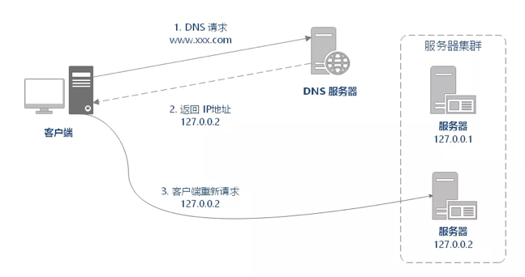
DNS 重定向的 优点：
使用简单：负载均衡工作，交给 DNS 服务器处理，省掉了负载均衡服务器维护的麻烦
提高性能：可以支持基于地址的域名解析，解析成距离用户最近的服务器地址（类似 CDN 的原理），可以加快访问速度，改善性能；
DNS 重定向的 缺点：
可用性差：DNS 解析是多级解析，新增/修改 DNS 后，解析时间较长；解析过程中，用户访问网站将失败；
扩展性低：DNS 负载均衡的控制权在域名商那里，无法对其做更多的改善和扩展；
维护性差：也不能反映服务器的当前运行状态；支持的算法少；不能区分服务器的差异（不能根据系统与服务的状态来判断负载）。
2-2-2 HTTP 负载均衡
HTTP 负载均衡是基于 HTTP 重定向实现的。HTTP 负载均衡属于七层负载均衡。
HTTP 重定向原理是：根据用户的 HTTP 请求计算出一个真实的服务器地址，将该服务器地址写入 HTTP 重定向响应中，返回给浏览器，由浏览器重新进行访问。
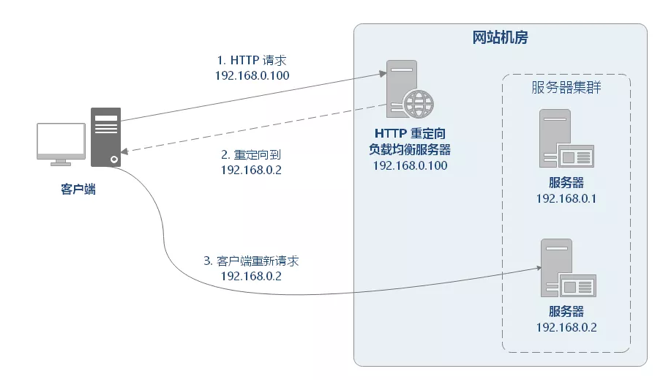
HTTP 重定向的优点：方案简单。
HTTP 重定向的 缺点：
- 性能较差：每次访问需要两次请求服务器，增加了访问的延迟。
- 降低搜索排名：使用重定向后，搜索引擎会视为 SEO 作弊。
- 如果负载均衡器宕机，就无法访问该站点。
由于其缺点比较明显，所以这种负载均衡策略实际应用较少。
2-2-3 反向代理负载均衡
反向代理（Reverse Proxy）方式是指以 代理服务器 来接受网络请求，然后 将请求转发给内网中的服务器，并将从内网中的服务器上得到的结果返回给网络请求的客户端。反向代理负载均衡属于七层负载均衡。
反向代理服务的主流产品：Nginx、Apache。
正向代理与反向代理有什么区别？
- 正向代理：发生在 客户端，是由用户主动发起的。翻墙软件就是典型的正向代理，客户端通过主动访问代理服务器，让代理服务器获得需要的外网数据，然后转发回客户端。
- 反向代理：发生在 服务端，用户不知道代理的存在。
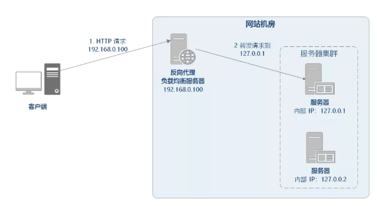
反向代理是如何实现负载均衡的呢？以 Nginx 为例，如下所示：
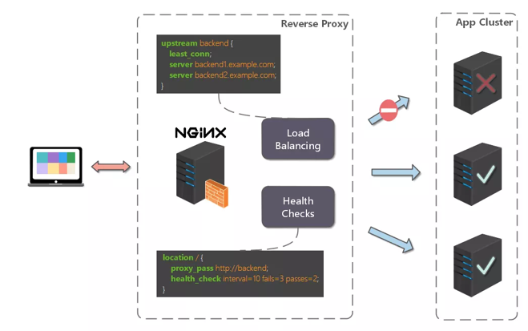
- 首先，在代理服务器上设定好负载均衡规则。
- 然后，当收到客户端请求，反向代理服务器拦截指定的域名或 IP 请求，根据负载均衡算法，将请求分发到候选服务器上。
- 其次，如果某台候选服务器宕机，反向代理服务器会有容错处理，比如分发请求失败 3 次以上，将请求分发到其他候选服务器上。
反向代理的 优点：
- 1) 多种负载均衡算法：支持多种负载均衡算法，以应对不同的场景需求。
- 2) 可以监控服务器：基于 HTTP 协议，可以监控转发服务器的状态，如：系统负载、响应时间、是否可用、连接数、流量等，从而根据这些数据调整负载均衡的策略。
反向代理的 缺点：
- 1) 额外的转发开销：反向代理的转发操作本身是有性能开销的，可能会包括创建连接，等待连接响应，分析响应结果等操作。
- 2) 增加系统复杂度：反向代理常用于做分布式应用的水平扩展，但反向代理服务存在以下问题，为了解决以下问题会给系统整体增加额外的复杂度和运维成本：
反向代理服务如果自身宕机，就无法访问站点，所以需要有 高可用 方案，常见的方案有：主备模式（一主一备）、双主模式（互为主备）。
反向代理服务自身也存在性能瓶颈，随着需要转发的请求量不断攀升，需要有 可扩展 方案。
2-2-4 IP负载均衡
IP 负载均衡是在网络层通过修改请求目的地址进行负载均衡。
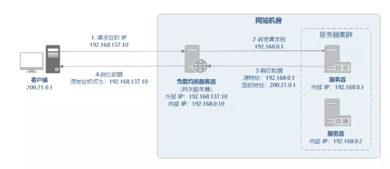
如上图所示，IP 均衡处理流程大致为：
客户端请求 192.168.137.10，由负载均衡服务器接收到报文。
负载均衡服务器根据算法选出一个服务节点 192.168.0.1，然后将报文请求地址改为该节点的 IP。
真实服务节点收到请求报文，处理后，返回响应数据到负载均衡服务器。
负载均衡服务器将响应数据的源地址改负载均衡服务器地址，返回给客户端。
IP 负载均衡在内核进程完成数据分发，较反向代理负载均衡有更好的从处理性能。但是，由于所有请求响应都要经过负载均衡服务器，集群的吞吐量受制于负载均衡服务器的带宽。
2-2-5 数据链路层负载均衡
数据链路层负载均衡是指在通信协议的数据链路层修改 mac 地址进行负载均衡。
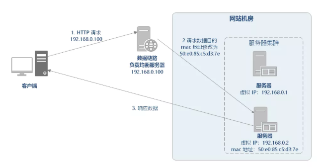
在 Linux 平台上最好的链路层负载均衡开源产品是 LVS (Linux Virtual Server)。LVS 是基于 Linux 内核中 netfilter 框架实现的负载均衡系统。netfilter 是内核态的 Linux 防火墙机制，可以在数据包流经过程中，根据规则设置若干个关卡（hook 函数）来执行相关的操作。
LVS 的工作流程大致如下：
- 当用户访问 www.sina.com.cn 时，用户数据通过层层网络，最后通过交换机进入 LVS 服务器网卡，并进入内核网络层。
- 进入 PREROUTING 后经过路由查找，确定访问的目的 VIP 是本机 IP 地址，所以数据包进入到 INPUT 链上
- IPVS 是工作在 INPUT 链上，会根据访问的 vip+port 判断请求是否 IPVS 服务，如果是则调用注册的 IPVS HOOK 函数，进行 IPVS 相关主流程，强行修改数据包的相关数据，并将数据包发往 POSTROUTING 链上。
- POSTROUTING 上收到数据包后，根据目标 IP 地址（后端服务器），通过路由选路，将数据包最终发往后端的服务器上。
开源 LVS 版本有 3 种工作模式，每种模式工作原理截然不同，说各种模式都有自己的优缺点，分别适合不同的应用场景，不过最终本质的功能都是能实现均衡的流量调度和良好的扩展性。主要包括三种模式：DR 模式、NAT 模式、Tunnel 模式。
3、负载均衡算法
负载均衡器的实现可以分为两个部分：
- 根据负载均衡算法在候选服务器列表选出一个服务器;
- 将请求数据发送到该服务器上。
负载均衡算法是负载均衡服务核心中的核心。负载均衡产品多种多样，但是各种负载均衡算法原理是共性的。负载均衡算法有很多种，分别适用于不同的应用场景，本文仅介绍最为常见的负载均衡算法的特性及原理：轮询、随机、最小活跃数、源地址哈希、一致性哈希。
注：负载均衡算法的实现，推荐阅读 Dubbo 官方负载均衡算法说明 ，源码讲解非常详细，非常值得借鉴。
3-1 随机
3-1-1 随机算法
随机（Random） 算法将请求随机分发到候选服务器。
随机算法 适合服务器硬件相同的场景。学习过概率论的都知道，调用量较小的时候，可能负载并不均匀，调用量越大，负载越均衡。
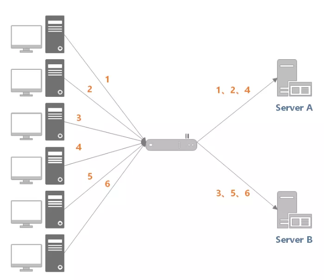
- 【示例】随机算法实现示例
负载均衡接口
public interface LoadBalance<N extends Node> {
N select(List<N> nodes, String ip);
}
负载均衡抽象类
public abstract class BaseLoadBalance<N extends Node> implements LoadBalance<N> {
@Override
public N select(List<N> nodes, String ip) {
if (CollectionUtil.isEmpty(nodes)) {
return null;
}
// 如果 nodes 列表中仅有一个 node，直接返回即可，无需进行负载均衡
if (nodes.size() == 1) {
return nodes.get(0);
}
return doSelect(nodes, ip);
}
protected abstract N doSelect(List<N> nodes, String ip);
}
服务器节点类
public class Node implements Comparable<Node> {
protected String url;
protected Integer weight;
protected Integer active;
// ...
}
随机算法实现
public class RandomLoadBalance<N extends Node> extends BaseLoadBalance<N> implements LoadBalance<N> {
private final Random random = new Random();
@Override
protected N doSelect(List<N> nodes, String ip) {
// 在列表中随机选取一个节点
int index = random.nextInt(nodes.size());
return nodes.get(index);
}
}
3-1-2 加权随机算法
加权随机（Weighted Random） 算法在随机算法的基础上，按照概率调整权重，进行负载分配。
【示例】加权随机算法实现示例
public class WeightRandomLoadBalance<N extends Node> extends BaseLoadBalance<N> implements LoadBalance<N> {
private final Random random = ThreadLocalRandom.current();
@Override
protected N doSelect(List<N> nodes, String ip) {
int length = nodes.size();
AtomicInteger totalWeight = new AtomicInteger(0);
for (N node : nodes) {
Integer weight = node.getWeight();
totalWeight.getAndAdd(weight);
}
if (totalWeight.get() > 0) {
int offset = random.nextInt(totalWeight.get());
for (N node : nodes) {
// 让随机值 offset 减去权重值
offset -= node.getWeight();
if (offset < 0) {
// 返回相应的 Node
return node;
}
}
}
// 直接随机返回一个
return nodes.get(random.nextInt(length));
}
}
3-2 轮询
3-2-1 轮询算法
轮询（Round Robin）算法的策略是：将请求依次分发到候选服务器。
如下图所示，负载均衡器收到来自客户端的 6 个请求，(1, 3, 5) 的请求会被发送到服务器 1，(2, 4, 6) 的请求会被发送到服务器 2。
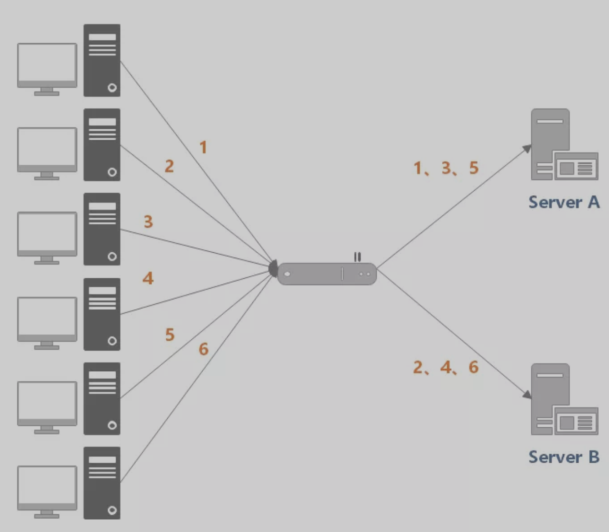
该算法适合场景：各服务器处理能力相近，且每个事务工作量差异不大。如果存在较大差异，那么处理较慢的服务器就可能会积压请求，最终无法承担过大的负载。
【示例】轮询算法示例
轮询负载均衡算法实现
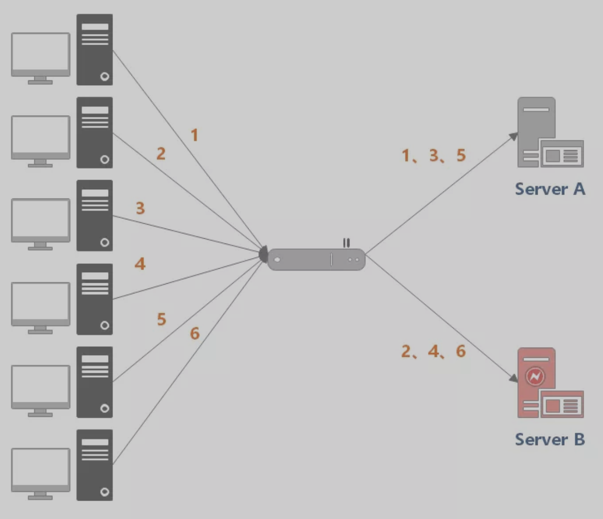
public class RoundRobinLoadBalance<N extends Node> extends BaseLoadBalance<N> implements LoadBalance<N> {
private final AtomicInteger position = new AtomicInteger(0);
@Override
protected N doSelect(List<N> nodes, String ip) {
int length = nodes.size();
// 如果位置值已经等于节点数，重置为 0
position.compareAndSet(length, 0);
N node = nodes.get(position.get());
position.getAndIncrement();
return node;
}
}
3-2-2 加权轮询算法
加权轮询（Weighted Round Robbin）算法在轮询算法的基础上，增加了权重属性来调节转发服务器的请求数目。性能高、处理速度快的节点应该设置更高的权重，使得分发时优先将请求分发到权重较高的节点上。
如下图所示，服务器 A 设置权重为 5，服务器 B 设置权重为 1，负载均衡器收到来自客户端的 6 个请求，那么 (1, 2, 3, 4, 5) 请求会被发送到服务器 A，(6) 请求会被发送到服务器 B。
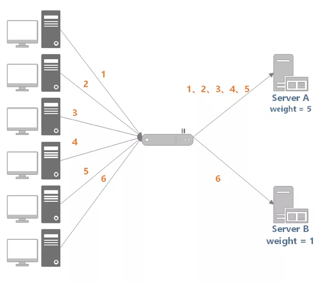
【示例】加权轮询算法实现示例
以下实现基于 Dubbo 加权轮询算法做了一些简化。
public class WeightRoundRobinLoadBalance<N extends Node> extends BaseLoadBalance<N> implements LoadBalance<N> {
/**
* 60秒
*/
private static final int RECYCLE_PERIOD = 60000;
/**
* Node hashcode 到 WeightedRoundRobin 的映射关系
*/
private ConcurrentMap<Integer, WeightedRoundRobin> weightMap = new ConcurrentHashMap<>();
/**
* 原子更新锁
*/
private AtomicBoolean updateLock = new AtomicBoolean();
@Override
protected N doSelect(List<N> nodes, String ip) {
int totalWeight = 0;
long maxCurrent = Long.MIN_VALUE;
// 获取当前时间
long now = System.currentTimeMillis();
N selectedNode = null;
WeightedRoundRobin selectedWRR = null;
// 下面这个循环主要做了这样几件事情：
// 1. 遍历 Node 列表，检测当前 Node 是否有相应的 WeightedRoundRobin，没有则创建
// 2. 检测 Node 权重是否发生了变化，若变化了，则更新 WeightedRoundRobin 的 weight 字段
// 3. 让 current 字段加上自身权重，等价于 current += weight
// 4. 设置 lastUpdate 字段，即 lastUpdate = now
// 5. 寻找具有最大 current 的 Node，以及 Node 对应的 WeightedRoundRobin，
// 暂存起来，留作后用
// 6. 计算权重总和
for (N node : nodes) {
int hashCode = node.hashCode();
WeightedRoundRobin weightedRoundRobin = weightMap.get(hashCode);
int weight = node.getWeight();
if (weight < 0) {
weight = 0;
}
// 检测当前 Node 是否有对应的 WeightedRoundRobin，没有则创建
if (weightedRoundRobin == null) {
weightedRoundRobin = new WeightedRoundRobin();
// 设置 Node 权重
weightedRoundRobin.setWeight(weight);
// 存储 url 唯一标识 identifyString 到 weightedRoundRobin 的映射关系
weightMap.putIfAbsent(hashCode, weightedRoundRobin);
weightedRoundRobin = weightMap.get(hashCode);
}
// Node 权重不等于 WeightedRoundRobin 中保存的权重，说明权重变化了，此时进行更新
if (weight != weightedRoundRobin.getWeight()) {
weightedRoundRobin.setWeight(weight);
}
// 让 current 加上自身权重，等价于 current += weight
long current = weightedRoundRobin.increaseCurrent();
// 设置 lastUpdate，表示近期更新过
weightedRoundRobin.setLastUpdate(now);
// 找出最大的 current
if (current > maxCurrent) {
maxCurrent = current;
// 将具有最大 current 权重的 Node 赋值给 selectedNode
selectedNode = node;
// 将 Node 对应的 weightedRoundRobin 赋值给 selectedWRR，留作后用
selectedWRR = weightedRoundRobin;
}
// 计算权重总和
totalWeight += weight;
}
// 对 weightMap 进行检查，过滤掉长时间未被更新的节点。
// 该节点可能挂了，nodes 中不包含该节点，所以该节点的 lastUpdate 长时间无法被更新。
// 若未更新时长超过阈值后，就会被移除掉，默认阈值为60秒。
if (!updateLock.get() && nodes.size() != weightMap.size()) {
if (updateLock.compareAndSet(false, true)) {
try {
// 遍历修改，即移除过期记录
weightMap.entrySet().removeIf(item -> now - item.getValue().getLastUpdate() > RECYCLE_PERIOD);
} finally {
updateLock.set(false);
}
}
}
if (selectedNode != null) {
// 让 current 减去权重总和，等价于 current -= totalWeight
selectedWRR.decreaseCurrent(totalWeight);
// 返回具有最大 current 的 Node
return selectedNode;
}
// should not happen here
return nodes.get(0);
}
protected static class WeightedRoundRobin {
// 服务提供者权重
private int weight;
// 当前权重
private AtomicLong current = new AtomicLong(0);
// 最后一次更新时间
private long lastUpdate;
public long increaseCurrent() {
// current = current + weight；
return current.addAndGet(weight);
}
public long decreaseCurrent(int total) {
// current = current - total;
return current.addAndGet(-1 * total);
}
public int getWeight() {
return weight;
}
public void setWeight(int weight) {
this.weight = weight;
// 初始情况下，current = 0
current.set(0);
}
public AtomicLong getCurrent() {
return current;
}
public void setCurrent(AtomicLong current) {
this.current = current;
}
public long getLastUpdate() {
return lastUpdate;
}
public void setLastUpdate(long lastUpdate) {
this.lastUpdate = lastUpdate;
}
}
}
3-3 最小活跃数
最小活跃数（Least Active）算法 将请求分发到连接数/请求数最少的候选服务器（目前处理请求最少的服务器）。
- 特点：根据候选服务器当前的请求连接数，动态分配。
- 场景：适用于对系统负载较为敏感或请求连接时长相差较大的场景。
由于每个请求的连接时长不一样，如果采用简单的轮循或随机算法，都可能出现某些服务器当前连接数过大，而另一些服务器的连接过小的情况，这就造成了负载并非真正均衡。虽然，轮询或算法都可以通过加权重属性的方式进行负载调整，但加权方式难以应对动态变化。
例如下图中，(1, 3, 5) 请求会被发送到服务器 1，但是 (1, 3) 很快就断开连接，此时只有 (5) 请求连接服务器 1；(2, 4, 6) 请求被发送到服务器 2，只有 (2) 的连接断开。该系统继续运行时，服务器 2 会承担过大的负载。
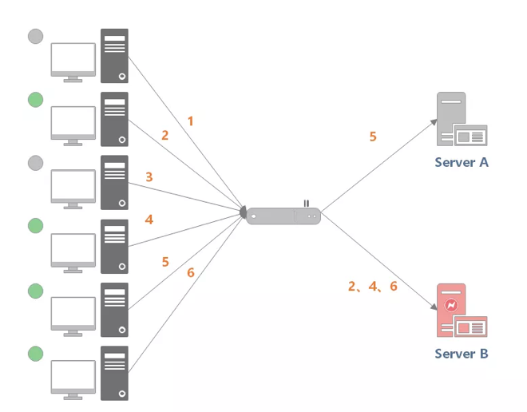
最小活跃数算法会记录当前时刻，每个候选节点正在处理的连接数，然后选择连接数最小的节点。该策略能够动态、实时地反应服务器的当前状况，较为合理地将负责分配均匀，适用于对当前系统负载较为敏感的场景。
例如下图中，服务器 1 当前连接数最小，那么新到来的请求 6 就会被发送到服务器 1 上。
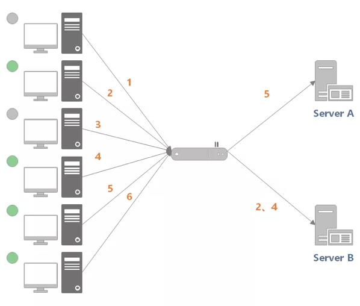
加权最小活跃数（Weighted Least Connection）在最小活跃数的基础上，根据服务器的性能为每台服务器分配权重，再根据权重计算出每台服务器能处理的连接数。
最小活跃数算法实现要点：活跃调用数越小，表明该服务节点处理能力越高，单位时间内可处理更多的请求，应优先将请求分发给该服务。在具体实现中，每个服务节点对应一个活跃数 active。初始情况下，所有服务提供者活跃数均为 0。每收到一个请求，活跃数加 1，完成请求后则将活跃数减 1。在服务运行一段时间后，性能好的服务提供者处理请求的速度更快，因此活跃数下降的也越快，此时这样的服务提供者能够优先获取到新的服务请求、这就是最小活跃数负载均衡算法的基本思想。
【示例】最小活跃数算法实现
以下实现基于 Dubbo 最小活跃数负载均衡算法做了些许改动。
public class LeastActiveLoadBalance<N extends Node> extends BaseLoadBalance<N> implements LoadBalance<N> {
private final Random random = new Random();
@Override
protected N doSelect(List<N> nodes, String ip) {
int length = nodes.size();
// 最小的活跃数
int leastActive = -1;
// 具有相同“最小活跃数”的服务者提供者（以下用 Node 代称）数量
int leastCount = 0;
// leastIndexs 用于记录具有相同“最小活跃数”的 Node 在 nodes 列表中的下标信息
int[] leastIndexs = new int[length];
int totalWeight = 0;
// 第一个最小活跃数的 Node 权重值，用于与其他具有相同最小活跃数的 Node 的权重进行对比，
// 以检测是否“所有具有相同最小活跃数的 Node 的权重”均相等
int firstWeight = 0;
boolean sameWeight = true;
// 遍历 nodes 列表
for (int i = 0; i < length; i++) {
N node = nodes.get(i);
// 发现更小的活跃数，重新开始
if (leastActive == -1 || node.getActive() < leastActive) {
// 使用当前活跃数更新最小活跃数 leastActive
leastActive = node.getActive();
// 更新 leastCount 为 1
leastCount = 1;
// 记录当前下标值到 leastIndexs 中
leastIndexs[0] = i;
totalWeight = node.getWeight();
firstWeight = node.getWeight();
sameWeight = true;
// 当前 Node 的活跃数 node.getActive() 与最小活跃数 leastActive 相同
} else if (node.getActive() == leastActive) {
// 在 leastIndexs 中记录下当前 Node 在 nodes 集合中的下标
leastIndexs[leastCount++] = i;
// 累加权重
totalWeight += node.getWeight();
// 检测当前 Node 的权重与 firstWeight 是否相等，
// 不相等则将 sameWeight 置为 false
if (sameWeight && i > 0
&& node.getWeight() != firstWeight) {
sameWeight = false;
}
}
}
// 当只有一个 Node 具有最小活跃数，此时直接返回该 Node 即可
if (leastCount == 1) {
return nodes.get(leastIndexs[0]);
}
// 有多个 Node 具有相同的最小活跃数，但它们之间的权重不同
if (!sameWeight && totalWeight > 0) {
// 随机生成一个 [0, totalWeight) 之间的数字
int offsetWeight = random.nextInt(totalWeight);
// 循环让随机数减去具有最小活跃数的 Node 的权重值，
// 当 offset 小于等于0时，返回相应的 Node
for (int i = 0; i < leastCount; i++) {
int leastIndex = leastIndexs[i];
// 获取权重值，并让随机数减去权重值
offsetWeight -= nodes.get(leastIndex).getWeight();
if (offsetWeight <= 0) {
return nodes.get(leastIndex);
}
}
}
// 如果权重相同或权重为0时，随机返回一个 Node
return nodes.get(leastIndexs[random.nextInt(leastCount)]);
}
}
3-4 源地址哈希
源地址哈希（IP Hash）算法 根据请求源 IP，通过哈希计算得到一个数值，用该数值在候选服务器列表的进行取模运算，得到的结果便是选中的服务器。
可以保证同一 IP 的客户端的请求会转发到同一台服务器上，用来实现会话粘滞（Sticky Session）。
特点：保证特定用户总是请求到相同的服务器，若服务器宕机，会话会丢失。
【示例】源地址哈希算法实现示例
public class IpHashLoadBalance<N extends Node> extends BaseLoadBalance<N> implements LoadBalance<N> {
@Override
protected N doSelect(List<N> nodes, String ip) {
if (StrUtil.isBlank(ip)) {
ip = "127.0.0.1";
}
int length = nodes.size();
int index = hash(ip) % length;
return nodes.get(index);
}
public int hash(String text) {
return HashUtil.fnvHash(text);
}
}
3-5 一致性哈希
一致性哈希（Consistent Hash）算法的目标是：相同的请求尽可能落到同一个服务器上。
一致性哈希 可以很好的解决 稳定性问题，可以将所有的 存储节点 排列在 首尾相接 的 Hash 环上，每个 key 在计算 Hash 后会 顺时针 找到 临接 的 存储节点 存放。而当有节点 加入 或 退出 时，仅影响该节点在 Hash环上顺时针相邻的后续节点。
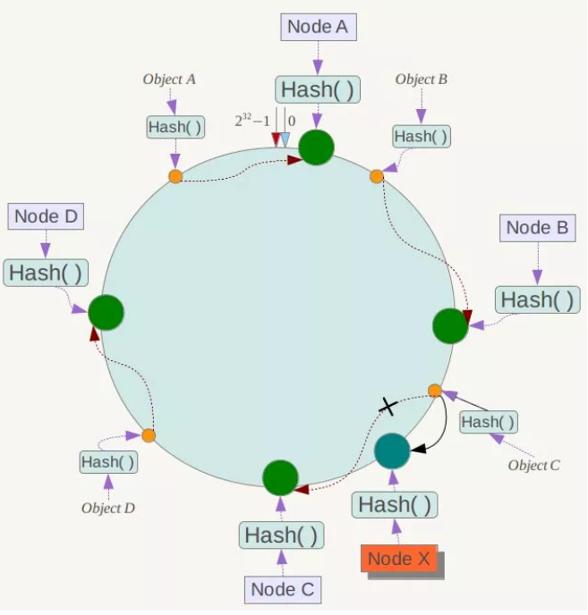
1）相同的请求是指：一般在使用一致性哈希时，需要指定一个 key 用于 hash 计算，可能是：
- 用户 ID
- 请求方 IP
- 请求服务名称，参数列表构成的串
2）尽可能是指：服务器可能发生上下线，少数服务器的变化不应该影响大多数的请求。
当某台候选服务器宕机时，原本发往该服务器的请求，会基于虚拟节点，平摊到其它候选服务器，不会引起剧烈变动。
优点：加入 和 删除 节点只影响 哈希环 中 顺时针方向 的 相邻的节点，对其他节点无影响。
缺点：加减节点 会造成 哈希环 中部分数据 无法命中。当使用 少量节点 时，节点变化 将大范围影响 哈希环 中 数据映射，不适合 少量数据节点 的分布式方案。普通 的 一致性哈希分区 在增减节点时需要 增加一倍 或 减去一半 节点才能保证 数据 和 负载的均衡。
注意：因为 一致性哈希分区 的这些缺点，一些分布式系统采用 虚拟槽 对 一致性哈希 进行改进，比如 Dynamo 系统。
【示例】一致性哈希算法示例
public class ConsistentHashLoadBalance<N extends Node> extends BaseLoadBalance<N> implements LoadBalance<N> {
private final ConcurrentMap<String, ConsistentHashSelector<?>> selectors = new ConcurrentHashMap<>();
@SuppressWarnings("unchecked")
@Override
protected N doSelect(List<N> nodes, String ip) {
// 分片数，这里设为节点数的 4 倍
Integer replicaNum = nodes.size() * 4;
// 获取 nodes 原始的 hashcode
int identityHashCode = System.identityHashCode(nodes);
// 如果 nodes 是一个新的 List 对象，意味着节点数量发生了变化
// 此时 selector.identityHashCode != identityHashCode 条件成立
ConsistentHashSelector<N> selector = (ConsistentHashSelector<N>) selectors.get(ip);
if (selector == null || selector.identityHashCode != identityHashCode) {
// 创建新的 ConsistentHashSelector
selectors.put(ip, new ConsistentHashSelector<>(nodes, identityHashCode, replicaNum));
selector = (ConsistentHashSelector<N>) selectors.get(ip);
}
// 调用 ConsistentHashSelector 的 select 方法选择 Node
return selector.select(ip);
}
/**
* 一致性哈希选择器
*/
private static final class ConsistentHashSelector<N extends Node> {
/**
* 存储虚拟节点
*/
private final TreeMap<Long, N> virtualNodes;
private final int identityHashCode;
/**
* 构造器
*
* @param nodes 节点列表
* @param identityHashCode hashcode
* @param replicaNum 分片数
*/
ConsistentHashSelector(List<N> nodes, int identityHashCode, Integer replicaNum) {
this.virtualNodes = new TreeMap<>();
this.identityHashCode = identityHashCode;
// 获取虚拟节点数，默认为 100
if (replicaNum == null) {
replicaNum = 100;
}
for (N node : nodes) {
for (int i = 0; i < replicaNum / 4; i++) {
// 对 url 进行 md5 运算，得到一个长度为16的字节数组
byte[] digest = md5(node.getUrl());
// 对 digest 部分字节进行 4 次 hash 运算，得到四个不同的 long 型正整数
for (int j = 0; j < 4; j++) {
// h = 0 时，取 digest 中下标为 0 ~ 3 的4个字节进行位运算
// h = 1 时，取 digest 中下标为 4 ~ 7 的4个字节进行位运算
// h = 2, h = 3 时过程同上
long m = hash(digest, j);
// 将 hash 到 node 的映射关系存储到 virtualNodes 中，
// virtualNodes 需要提供高效的查询操作，因此选用 TreeMap 作为存储结构
virtualNodes.put(m, node);
}
}
}
}
public N select(String key) {
// 对参数 key 进行 md5 运算
byte[] digest = md5(key);
// 取 digest 数组的前四个字节进行 hash 运算，再将 hash 值传给 selectForKey 方法，
// 寻找合适的 Node
return selectForKey(hash(digest, 0));
}
private N selectForKey(long hash) {
// 查找第一个大于或等于当前 hash 的节点
Map.Entry<Long, N> entry = virtualNodes.ceilingEntry(hash);
// 如果 hash 大于 Node 在哈希环上最大的位置，此时 entry = null，
// 需要将 TreeMap 的头节点赋值给 entry
if (entry == null) {
entry = virtualNodes.firstEntry();
}
// 返回 Node
return entry.getValue();
}
}
/**
* 计算 hash 值
*/
public static long hash(byte[] digest, int number) {
return (((long) (digest[3 + number * 4] & 0xFF) << 24)
| ((long) (digest[2 + number * 4] & 0xFF) << 16)
| ((long) (digest[1 + number * 4] & 0xFF) << 8)
| (digest[number * 4] & 0xFF))
& 0xFFFFFFFFL;
}
/**
* 计算 MD5 值
*/
public static byte[] md5(String value) {
MessageDigest md5;
try {
md5 = MessageDigest.getInstance("MD5");
} catch (NoSuchAlgorithmException e) {
throw new IllegalStateException(e.getMessage(), e);
}
md5.reset();
byte[] bytes = value.getBytes(StandardCharsets.UTF_8);
md5.update(bytes);
return md5.digest();
}
}
以上示例基于 Dubbo 的一致性哈希负载均衡算法做了一些简化。